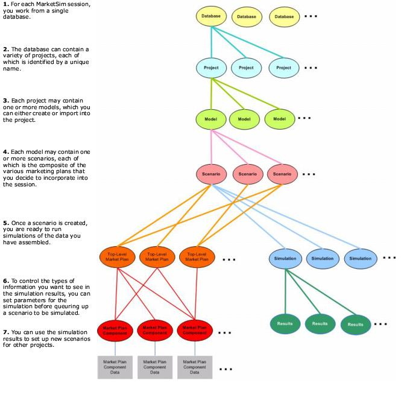
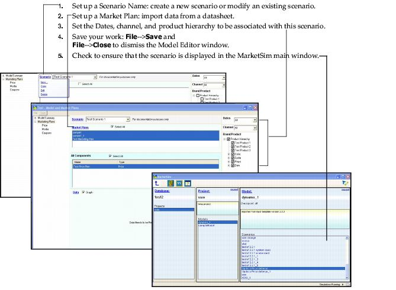

|
|
CHAPTER 2 Getting Started
Decision Power's MarketSim application is a powerful simulation platform that allows you to apply real consumer and marketing data to an endless variety of marketing scenarios for use in forecasting the success of your products.
This manual describes how to use MarketSim's modeling and simulation platform to build marketing models that you can reuse continually in your quest to answer tough marketing questions as expediently as possible.
This chapter describes the MarketSim task flow and the interface, in the following topics:
Overview-From Start to Sim
The MarketSim application interface provides an intuitive task flow that mirrors the typical sequence of tasks necessary to build a Marketing simulation model (Figure 1).

FIGURE 1. MarketSim Application Components and Task Flow
Working With the MarketSim Interface
This chapter assumes that you have completed installation and setup of the MarketSim application, in which you used the database configuration sections of the interface. This section describes the project, model, and simulation tools that you will use to develop scenarios for simulations, in the following topics:
MarketSim Projects
Once you've selected the database to be used for this MarketSim session, you can then create, select, or delete project(s) associated with the database. From the same MarketSim interface , you can also select options for managing the MarketSim Models to be associated with the project name you will be working on.
MarketSim Models
Use the MarketSim Model Editor window to perform editing for the model and its marketing plans. This window contains two tabbed windows in which to apply Market Plan configurations and adjustments to data based on spreadsheet data. Few, if any, adjustments are necessary for you to apply at the Model tab window. Most of your work will occur in the MarketPlans tab window. Marketing Plans configuration applies scenario, market plans, and components to the model you are working on.
Navigation: Database <name>-->Project <name>--> Model <menu> -->Edit Model = MarketSim Model Editor window.
or
Database <name>-->Project: Models
Double-click a model name from the Projects list to present the MarketSim Model Editor window for the selected model name.MarketSim Market Plans
The Market Plan window displays the product plans that are associated with a scenario, provides access to scenario setup, and contains settings to control start/end dates and aggregation of data pertinent to a scenario. Use the Market Plan window to access settings for a scenario, market plan, and components.
Navigation: Database <name>-->Project <name>--> Model-Edit Model- = Model and MarketPlans window, Market Plans tab
- Immediate display of a message stating that MarketSim is importing the data.
- Display of market plan names, at the Market Plans list window, for the selected market plans. The listed market plans comply with the brand/product selections from the Product Hierarchy.
- Display of Components at the Components list window.
Creating and Editing Scenarios
At least one scenario must be created prior to attempting simulation of a model. Using the Edit Scenario window , you can set a unique name and description for the scenario, and select the components to be used in the scenario for the model currently being built.
Note: After your scenario has been created, you will also need to set up simulation parameters for the scenario. To find out how to do this, see "Scenario Simulation Settings" on page 39.
For your scenario, you can choose to use market plans or external factors. Either selection populates the view areas of the window with the market plans or external factors that you can fine tune for use in further defining the data to be rolled into your model. From the view areas, click to selectively include and/or exclude individual or groups of components-which encompasses those tentatively to be included and those that are available-from your scenario. As you select these components, MarketSim reports the cumulative counts at the left side of the window.
The identical window is presented to allow editing of all settings for the scenario. Details about the fields in this window are provided in Table 8, "Scenario Create/Edit Window," on page 22.
Navigation:
Database <name>-->Project <name>--> Model-Edit Model = Model and MarketPlans window, Market Plans tab--> Scenario menu, Edit Scenario .
Creating and Editing Market Plans-Importing from Excel
Use the Importing from Excel function to apply specified data sheets to the market plan. Before pulling the files into the MarketSim application, make sure that the .xls files contains a data sheet for each component plan. Component plans must be in place for Coupons, Display, distribution, Media, Price, and External Factors.
Navigation:
Database <name>-->Project <name>--> Model-Edit Model = Model and MarketPlans window, Market Plans tab--> Market Plans menu, Import from Excel = Create Market Plan and Components from File(s) dialog box .
Details about fields in the Create Market Plan and Components from File(s) dialog box are provided in Table 9.
Creating and Editing Market Plans-Using Existing Components and Scenarios
Use the Create Marketing Plan window tools to set up a market plan from component plans and scenarios already loaded in your project files.
Navigation: Database <name>-->Project <name>--> Model-Edit Model = Model and MarketPlans window, Market Plans tab--> Market Plans menu, New = Create Marketing Plan window .
Creating and Editing Components
MarketSim provides separate worksheet windows to enable fine-tuning of the components you want to use in your market plans. All component plans worksheets contain identical window conventions, but each is applicable only to the selected component type.
To present a component editing worksheet:
1. Click to highlight a market plan name in the MarketSim Model Editor.
2. Use the Components drop-down menu to select the component type you want to edit. Information for the selection is now presented in the Components view area.
3. Use the Components drop-down menu to select Edit. The plan worksheet for the selected component is now presented.
MarketSim Scenarios and Simulations
Scenario configuration/setup is a requirement for simulation. You cannot run a simulation until you have created a scenario. As you continue to build scenarios, you will find each listed in the Scenarios portion of the MarketSim primary interface. From there, you can select the scenario to simulate.
Create scenarios in conjunction with market plans. Scenario configuration tools are provided in the Market Plan worksheet, to enable you to name, copy, edit, or delete scenarios.
Navigation: To create scenario: Model--->Edit Model-->Marketing Plans-->Scenario-->New=New Scenario dialog box

Simulations and Results
The Simulations and Results window presents the list of simulations and results currently known to MarketSim, and provides controls to enable launch, edit, delete, and copy of simulations.
Navigation:
Double-click a scenario name from the MarketSim main window to present the Scenario window.
MarketSim Grids
The MarketSim grids provide popup menus from which to select features for filtering, sorting, exporting/importing data, and changing values for the column from which the menu is invoked .
|
DecisionPower, Inc http://www.decisionpower.com/ Voice: (408) 379-9200 Fax: (866) 257-1701 support@decisionpower.com |
|
|